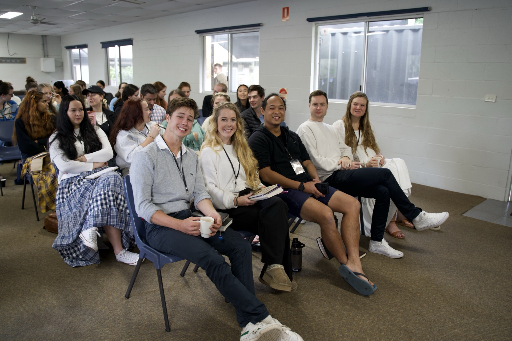

WHO WE ARE
Faith, politics, culture, and public life.
THE VISION
The Recharge is a Christian conference aimed at helping young Australians learn about what it means for Christians to engage in public life. This includes politics, culture, the arts and much more.

Christianity is facing challenges on all fronts. In Australia, church attendance is the lowest it has ever been. "Woke-ism," entirely anathema to Christian morality, is dominating what's taught to our kids, and what remains of our once-Christian society seems to be quickly disappearing.
But the tide is beginning to turn. With Zoomers now identifying as more "spiritual" and "religious" than millennials, it is imperative that we understand how Christ fulfils this God-shaped hole in our culture.
Quasi-religious figures like Jordan Peterson and Andrew Tate have risen to meet this demand, promising meaning and offering answers to once-taboo questions. By addressing issues like gender, technology, politics, dating, and loneliness, they've touched on the pressing questions young people are asking. Meanwhile, the church has largely watched from the sidelines, conforming to the world and neglecting to challenge the delusions of our modern age.